x1<-c(1,5, 1)
x2<-c(5, 1, 2)
dist( rbind(x1, x2), method = "euclidean") x1
x2 5.744563In this topic, we will discuss Unsupervised Learning, or as we talked about last time, the situation where you are looking for groups in your data when your data don’t come with a group variable. I.e. sometimes you want to find groups of similar observations, and you need a statistical tool for doing this.
In statistics, this is called Cluster analysis, another case of the machine learning people inventing a new word for something and taking credit for a type of analysis that’s been around for fifty years.
\[d(x_i,x_j) = \sqrt{(x_i-x_j)'(x_i-x_j)}\]
Where the x’s are the variables measured on the two observations, for instance, if we have 3 x variables for two observations, then the distance between them is:
x1<-c(1,5, 1)
x2<-c(5, 1, 2)
dist( rbind(x1, x2), method = "euclidean") x1
x2 5.744563If the two observations are more similar, the distance is smaller:
x1<-c(1,5, 1)
x2<-c(1, 2, 2)
x3<-c(8,7,10)
dist( rbind(x1, x2, x3), method = "euclidean") x1 x2
x2 3.162278
x3 11.575837 11.747340and vice versa.
library(readr)
prb<-read_csv(file = url("https://github.com/coreysparks/data/blob/master/PRB2008_All.csv?raw=true"))Rows: 209 Columns: 35
── Column specification ────────────────────────────────────────────────────────
Delimiter: ","
chr (3): Country, Continent, Region
dbl (32): Y, X, ID, Year, Population., CBR, CDR, Rate.of.natural.increase, N...
ℹ Use `spec()` to retrieve the full column specification for this data.
ℹ Specify the column types or set `show_col_types = FALSE` to quiet this message.names(prb)<-tolower(names(prb))
library(dplyr)
Attaching package: 'dplyr'
The following objects are masked from 'package:stats':
filter, lag
The following objects are masked from 'package:base':
intersect, setdiff, setequal, unionprb<-prb%>%
# mutate(africa=ifelse(continent=="Africa", 1, 0))%>%
mutate(lngdp=log(gnippppercapitausdollars))%>%
select(continent, country, lngdp, tfr, percpoplt15, e0total, percurban)%>%
filter(complete.cases(.))knitr::kable(head(prb))| continent | country | lngdp | tfr | percpoplt15 | e0total | percurban |
|---|---|---|---|---|---|---|
| Europe | Albania | 8.791790 | 1.6 | 27 | 75 | 45 |
| Africa | Algeria | 8.610684 | 2.3 | 30 | 72 | 63 |
| Africa | Angola | 8.389360 | 6.8 | 46 | 43 | 57 |
| North America | Antigua and Barbuda | 9.442245 | 2.1 | 28 | 73 | 31 |
| South America | Argentina | 9.471935 | 2.4 | 26 | 75 | 91 |
| Asia | Armenia | 8.682708 | 1.7 | 21 | 71 | 64 |
Here we use 80% of the data to train our simple model
library(caret)Loading required package: ggplot2Loading required package: latticeset.seed(1115)
train<- createDataPartition(y = prb$e0total, p = .80, list=F)
prbtrain<-prb[train,]
prbtest<-prb[-train,]First we form our matrix of distances between all the countries on our observed variables:
dmat<-dist(scale(prbtrain[, 3:7]), method="euclidean")Then we run a hierarhical clustering algorithm on the matrix. There are lots of different ways to do this, we will just use the simplest method, the single-linkage, or nearest neighbor approach. This works by first sorting the distances from smallest to largest, then making clusters from the smallest distance pair.
Once this is done, this pair is merged into a cluster, their distance is then compared to the remaining observations, so on and so on, until you have a set of clusters for every observation.
The original way to plot these analyses is by a dendrogram, or tree plot.
library(scorecard)
library(factoextra)Welcome to factoextra!Want to learn more? See two factoextra-related books at https://www.datanovia.com/en/product/practical-guide-to-principal-component-methods-in-r/library(class)
library(RColorBrewer)
hc1<-hclust(d= dmat, method="single")
fviz_dend(hc1, k=5, k_colors =brewer.pal(n=5, name="Accent"),
color_labels_by_k = TRUE, ggtheme = theme_minimal())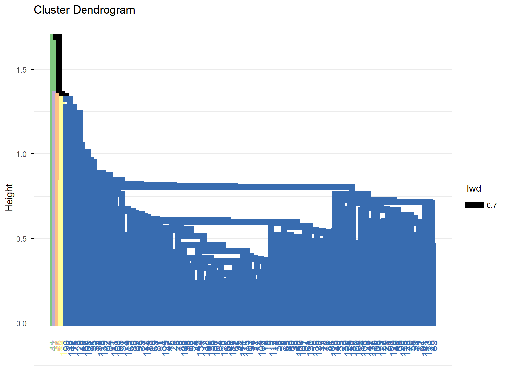
groups<-cutree(hc1, k=5)
table(groups)groups
1 2 3 4 5
138 1 1 1 2 So this is silly becuase the method round 3 cluster that only had one observation. This is a weakness of the single linkage method, instead we use another method. Ward’s method is typically seen as a better alternative because it tends to find clusters of similar size.
hc2<-hclust(d= dmat,
method="ward.D")
fviz_dend(hc2, k=4,
k_colors = brewer.pal(n=5, name="Accent"),
color_labels_by_k = TRUE,
ggtheme = theme_minimal())Warning in get_col(col, k): Length of color vector was longer than the number
of clusters - first k elements are used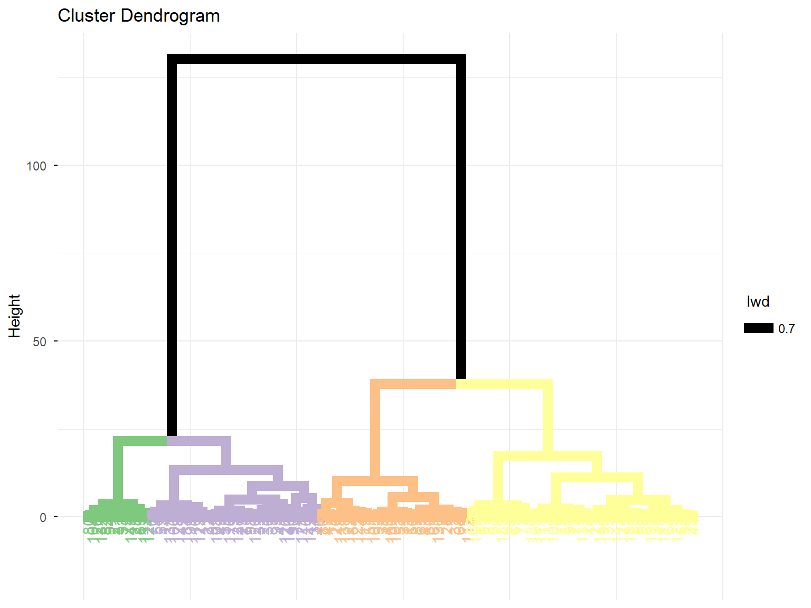
groups<-cutree(hc2, k=5)
table(groups)groups
1 2 3 4 5
35 40 15 38 15 prbtrain$group1<-factor(cutree(hc2, k=4))
prbtrain%>%
ggplot(aes(x=e0total, y=tfr, pch=group1, color=group1))+
geom_point()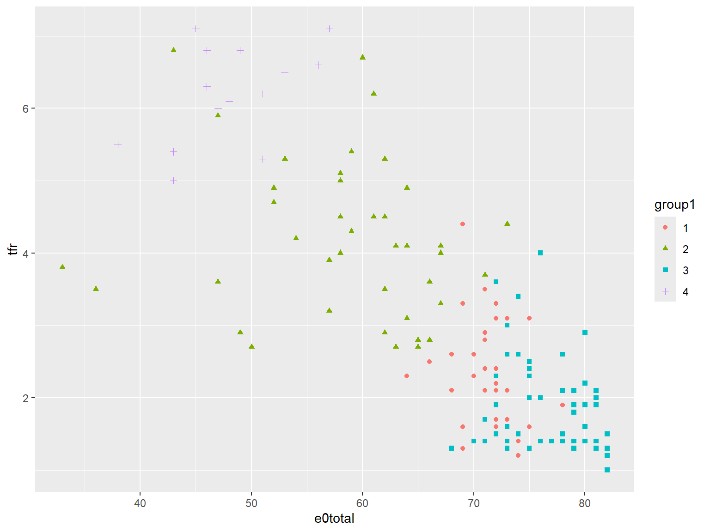
prbtrain<-prb[train,]
km<-kmeans(x = scale(prbtrain[, 3:7]),
center = 3,
nstart = 20)
kmK-means clustering with 3 clusters of sizes 37, 59, 47
Cluster means:
lngdp tfr percpoplt15 e0total percurban
1 -1.1558772 1.4112293 1.2211637 -1.36773615 -0.8021077
2 0.9109715 -0.7547540 -0.9095169 0.80418981 0.8817098
3 -0.2336141 -0.1635105 0.1803924 0.06721359 -0.4753807
Clustering vector:
[1] 3 3 1 3 2 2 2 2 3 2 3 2 3 3 2 3 2 2 2 1 1 3 1 2 1 3 2 2 1 1 1 2 1 2 2 2 1
[38] 3 3 3 1 3 3 2 2 3 2 2 1 2 3 3 1 3 1 3 2 2 3 3 2 2 2 2 3 2 3 3 2 3 1 2 2 1
[75] 1 2 2 2 1 1 2 1 2 3 2 3 3 2 1 1 3 2 3 1 1 2 2 3 1 3 3 2 2 1 3 3 2 3 2 1 2
[112] 2 1 2 2 1 2 3 3 1 1 2 3 1 3 1 1 3 3 2 3 1 2 2 2 2 3 2 3 1 1 3 2
Within cluster sum of squares by cluster:
[1] 67.23124 67.62378 72.23964
(between_SS / total_SS = 70.8 %)
Available components:
[1] "cluster" "centers" "totss" "withinss" "tot.withinss"
[6] "betweenss" "size" "iter" "ifault" library(ClusterR)
km2<-KMeans_rcpp(data=scale(prbtrain[, 3:7]), cluster=4, num_init = 10)
prbtrain$cluster<-as.factor(km2$cluster)
prbtrain%>%
ggplot(aes(x=lngdp, y=tfr, group=cluster, color=cluster))+
geom_point( cex=2)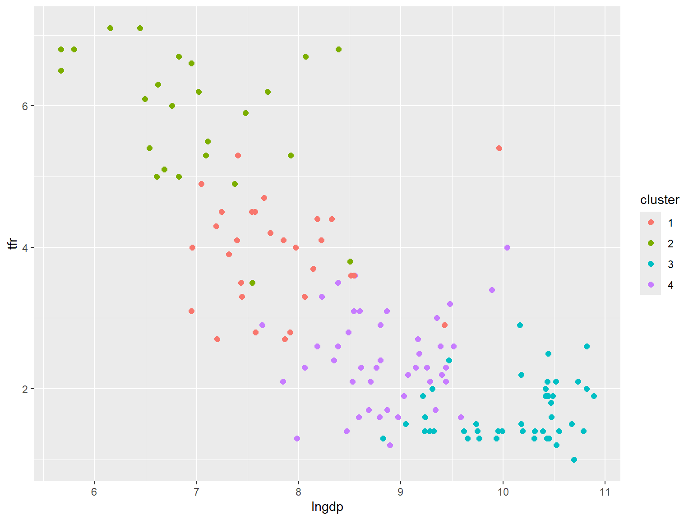
Here I loop over 1 to 10 clusters and store the between group variances, then plot the relative differences. You are looking for the number of clusters where you see a shoulder in the plot.
ss<-NULL
for(i in 1:10){
km<-kmeans(x=scale(prbtrain[, 3:7]),
nstart = 10,
centers = i)
ss[i]<-km$withinss
}Warning in ss[i] <- km$withinss: number of items to replace is not a multiple
of replacement length
Warning in ss[i] <- km$withinss: number of items to replace is not a multiple
of replacement length
Warning in ss[i] <- km$withinss: number of items to replace is not a multiple
of replacement length
Warning in ss[i] <- km$withinss: number of items to replace is not a multiple
of replacement length
Warning in ss[i] <- km$withinss: number of items to replace is not a multiple
of replacement length
Warning in ss[i] <- km$withinss: number of items to replace is not a multiple
of replacement length
Warning in ss[i] <- km$withinss: number of items to replace is not a multiple
of replacement length
Warning in ss[i] <- km$withinss: number of items to replace is not a multiple
of replacement length
Warning in ss[i] <- km$withinss: number of items to replace is not a multiple
of replacement lengthplot(x=1:10, y=ss, type = "l")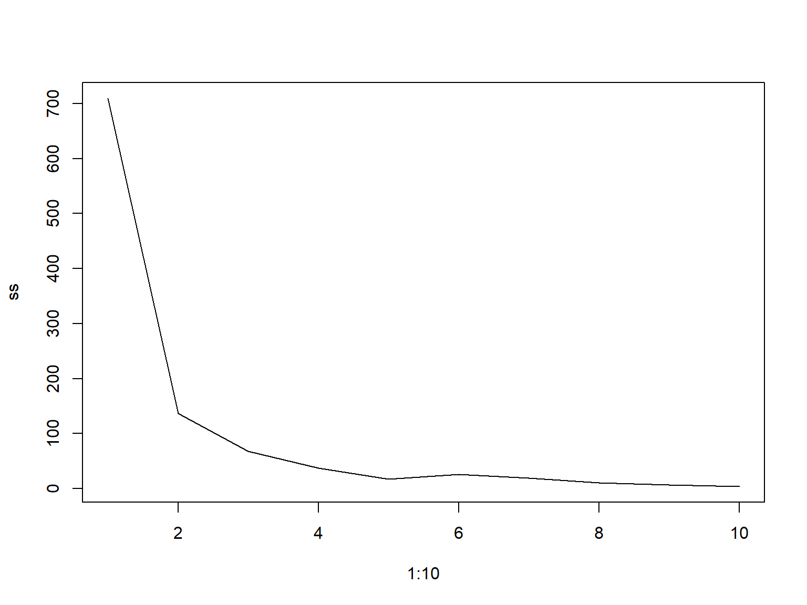
fviz_nbclust(scale(prbtrain[, 3:7]), kmeans, nstart=20, method="wss")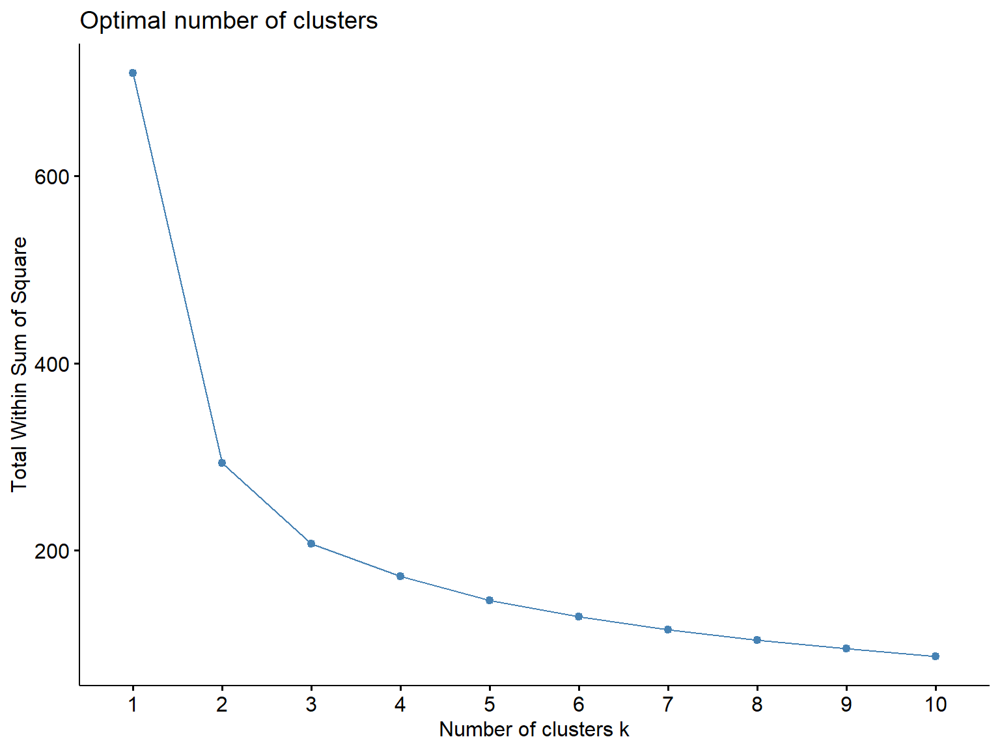
kmeans_fancy <- kmeans(scale(prbtrain[, 3:7]),3, nstart = 100)
fviz_cluster(kmeans_fancy,
data = scale(prbtrain[, 3:7]),
geom = c("point"),
ellipse.type = "convex")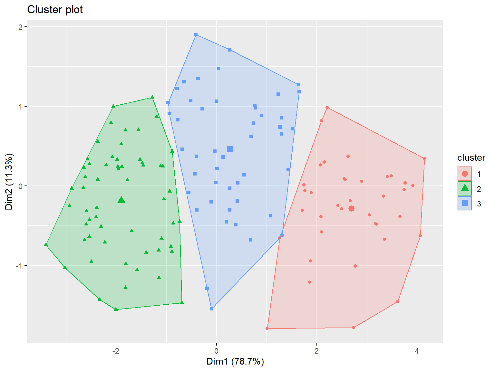
library(cluster)
gap_stat <- clusGap(scale(prbtrain[, 3:7]),
FUN = kmeans,
nstart = 30,
K.max = 10, B = 100)
fviz_gap_stat(gap_stat) +
theme_minimal() +
ggtitle("fviz_gap_stat: Gap Statistic")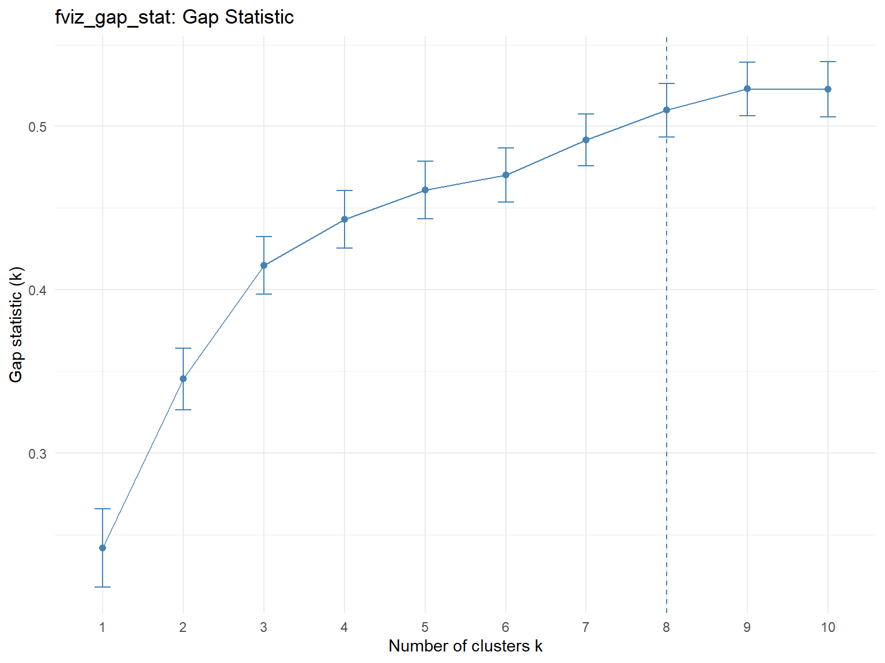
fviz_nbclust(scale(prbtrain[, 3:7]),FUNcluster = kmeans,
method = "silhouette", k.max = 10) +
theme_minimal() +
ggtitle("The Silhouette Plot")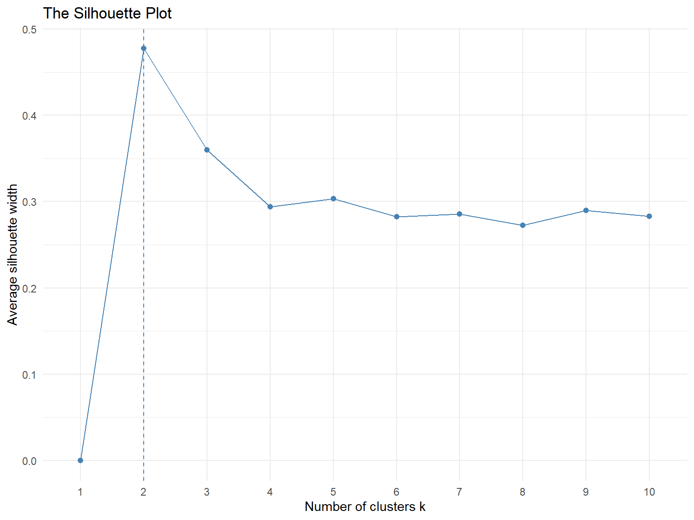
prbtrain%>%
group_by(cluster)%>%
summarise_at(vars(lngdp, e0total, percpoplt15, tfr),mean, na.rm=T)# A tibble: 4 × 5
cluster lngdp e0total percpoplt15 tfr
<fct> <dbl> <dbl> <dbl> <dbl>
1 1 7.81 62.3 38.6 3.91
2 2 6.97 48.9 44.7 5.86
3 3 10.1 77.4 18.0 1.67
4 4 8.86 70.8 28.9 2.41prbtest$cluster<-as.factor(predict_KMeans(data=scale(prbtest[, 3:7]),
CENTROIDS = km2$centroids))
prbtest%>%
ggplot(aes(x=e0total, y=tfr, group=cluster, color=cluster))+
geom_point(cex=4, pch="x")+
geom_point(data=prbtrain,
aes(x=e0total, y=tfr, group=cluster, color=cluster))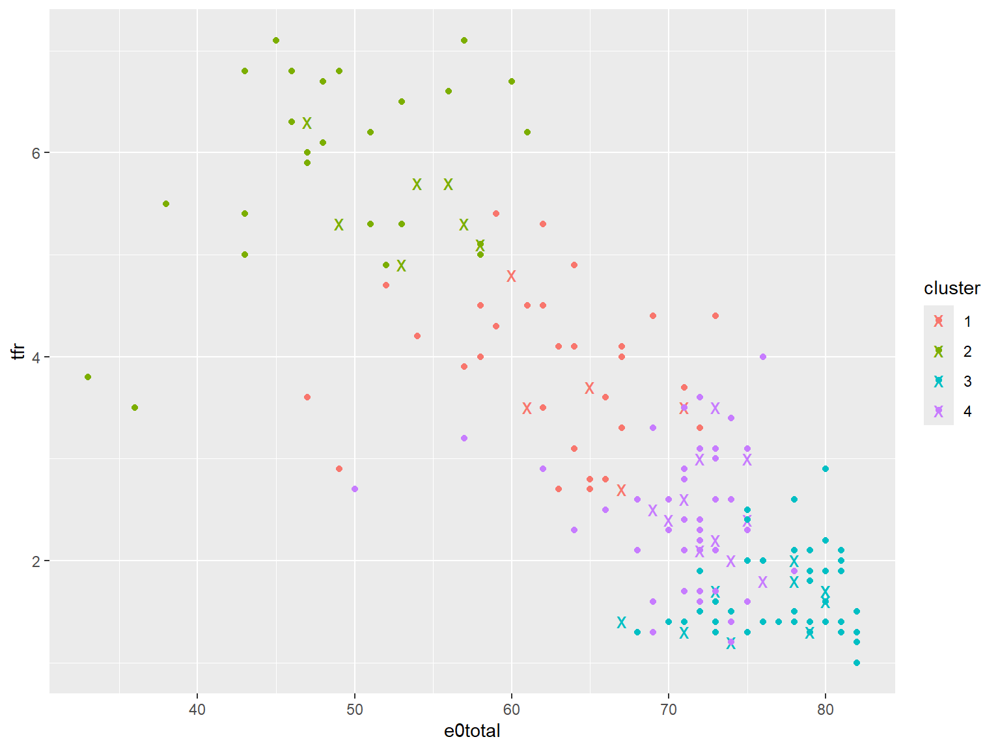
library(factoextra)
km.res <- eclust(scale(prbtrain[, 3:7]),
FUNcluster = "kmeans",
k = 3,
nstart = 25,
graph = FALSE)
fviz_cluster(km.res, ellipse.type = "norm", ellipse.level = 0.68)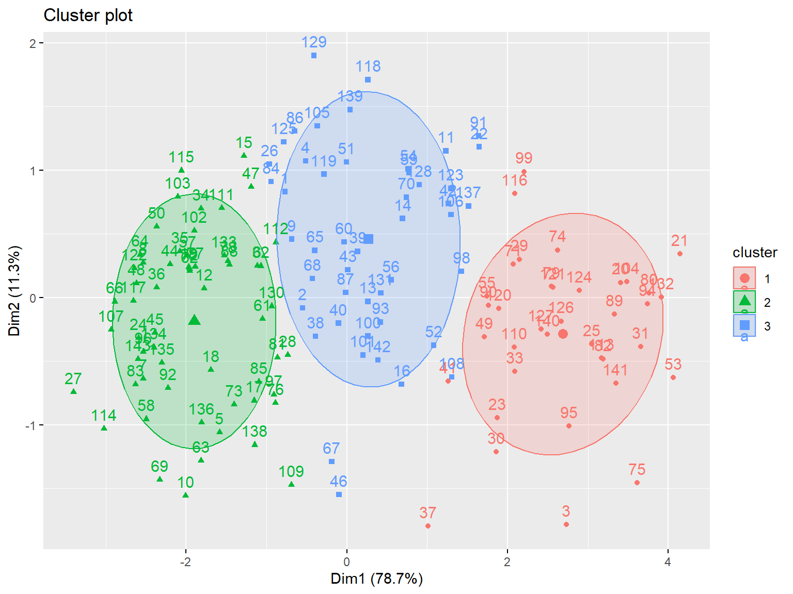
fviz_silhouette(km.res) cluster size ave.sil.width
1 1 37 0.37
2 2 59 0.44
3 3 47 0.27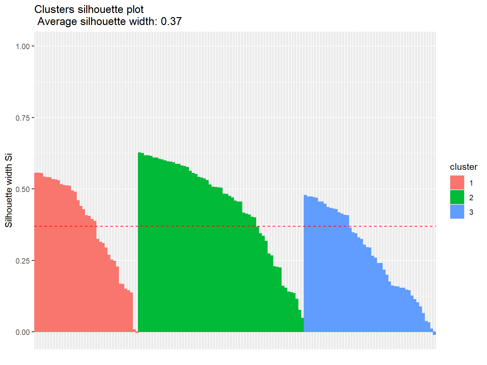
res.hc <- eclust(scale(prbtrain[, 3:7]), "hclust", k = 4,
method = "ward.D2", graph = FALSE)
head(res.hc$cluster, 15) [1] 1 1 2 1 3 3 3 3 1 3 1 3 1 1 3fviz_dend(res.hc, rect = TRUE, show_labels = TRUE, cex = 0.5)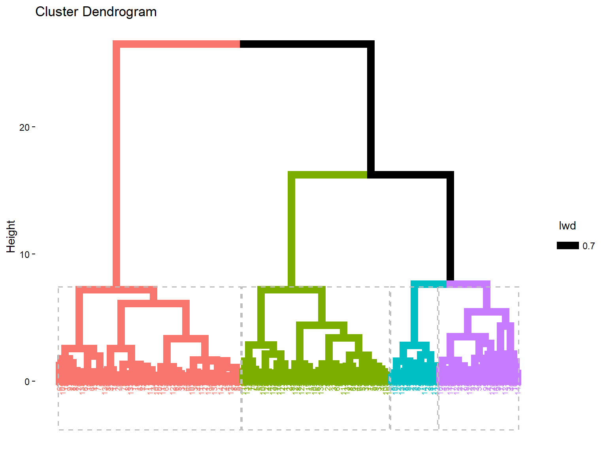
res.hc <- eclust(scale(prbtrain[, 3:7]), "hclust", k = 4,
method = "ward.D2", graph = FALSE)
grp <- res.hc$cluster
clus.centers <- aggregate(prbtrain, list(grp), mean)Warning in mean.default(X[[i]], ...): argument is not numeric or logical:
returning NA
Warning in mean.default(X[[i]], ...): argument is not numeric or logical:
returning NA
Warning in mean.default(X[[i]], ...): argument is not numeric or logical:
returning NA
Warning in mean.default(X[[i]], ...): argument is not numeric or logical:
returning NA
Warning in mean.default(X[[i]], ...): argument is not numeric or logical:
returning NA
Warning in mean.default(X[[i]], ...): argument is not numeric or logical:
returning NA
Warning in mean.default(X[[i]], ...): argument is not numeric or logical:
returning NA
Warning in mean.default(X[[i]], ...): argument is not numeric or logical:
returning NA
Warning in mean.default(X[[i]], ...): argument is not numeric or logical:
returning NA
Warning in mean.default(X[[i]], ...): argument is not numeric or logical:
returning NA
Warning in mean.default(X[[i]], ...): argument is not numeric or logical:
returning NA
Warning in mean.default(X[[i]], ...): argument is not numeric or logical:
returning NAclus.centers Group.1 continent country lngdp tfr percpoplt15 e0total percurban
1 1 NA NA 8.397690 2.786957 31.89130 69.23913 40.15217
2 2 NA NA 7.895755 4.624000 41.20000 54.32000 44.72000
3 3 NA NA 9.867917 1.833333 20.05263 76.43860 73.73684
4 4 NA NA 6.515934 6.226667 45.80000 48.06667 27.26667
cluster
1 NA
2 NA
3 NA
4 NA